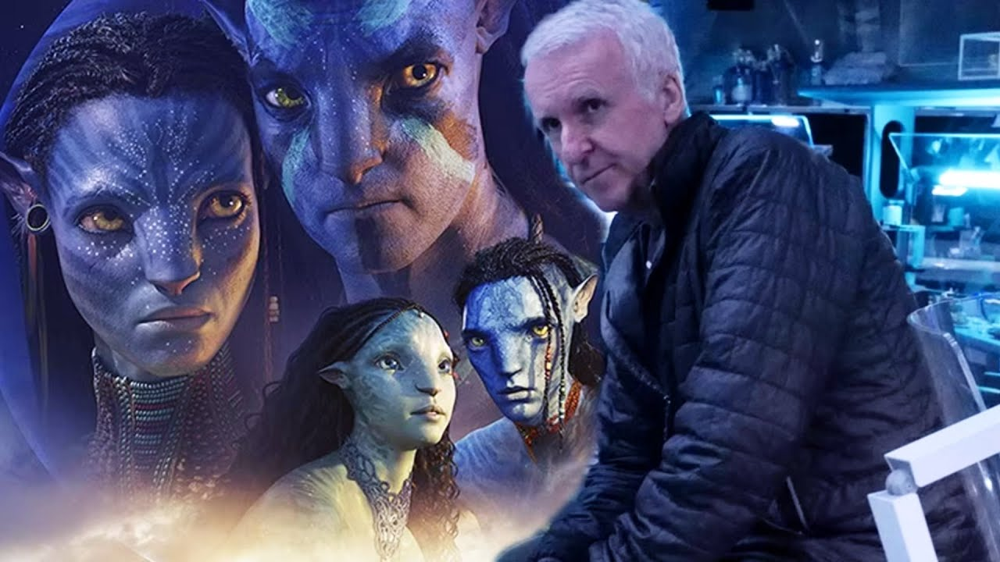
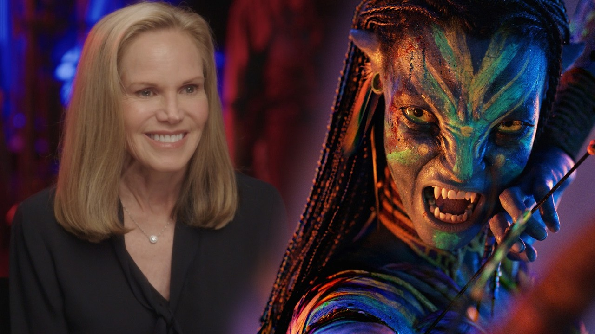
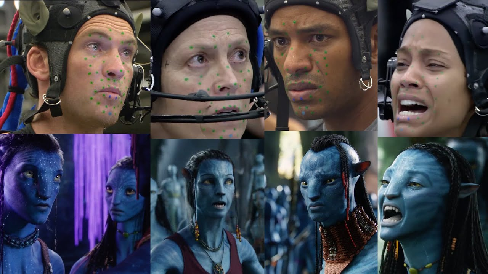

Produccion
La producción de la saga “Avatar” es una de las más ambiciosas en la historia del cine. James Cameron comenzó a desarrollar el proyecto muchos años antes del estreno de la primera película, trabajando en nuevas tecnologías para crear un mundo completamente digital y realista.



Gran parte del proceso de filmación se realizó utilizando tecnología de captura de movimiento avanzada, permitiendo que los actores interpretaran a sus personajes en un entorno virtual. Esto revolucionó la forma de hacer películas de ciencia ficción.
Las secuelas fueron filmadas de manera consecutiva para mantener la continuidad de la historia y optimizar la producción. Además, el equipo trabajó durante años en el desarrollo de los efectos visuales y los escenarios submarinos de Pandora.